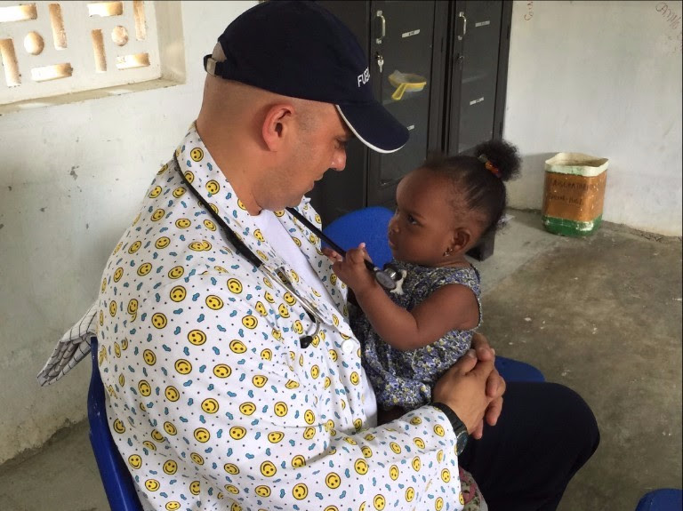

La campaña del ahora diputado a Asamblea de Antioquia Wilson Gómez, estuvo marcada por un lineamiento estratégico de construcción de mensajes directos y coherentes que reflejaran los propósitos, planes y proyectos que se impulsarán durante el tiempo de coadministración del departamento de Antioquia desde la Duma. Esta campaña partió de construir un discurso profundo, real, didáctico y transparente. Esto ayudó a que el votante, entendiera realmente la función de un diputado a la asamblea departamental y al saberlo, encontrara en Wilson la mejor opción para defender los intereses ciudadanos al rededor de la línea de trabajo de Wilson: Primero los Niños.
Los resultados de los comicios electorales del pasado 25 de octubre fueron exitosos y demostró que la campaña fue asertiva. Es así como Wilson Gómez, llega a formar parte de la Duma que estructura un nuevo mapa político en Antioquia en donde el partido Centro Democrático, ganó la mayor cantidad de curules en comparación con los demás partido. (Leer InFocusMadird - IFM Other News Network realiza los spots comerciales de todos los diputados del Centro Democrático)
Wilson Gómez es médico de profesión y político de convicción que siempre ha trabajado por la salud de los antioqueños, especialmente la de los niños y adolescentes. Su estrategia de campaña para alcanzar la asamblea, se fortaleció con las ideas, creación y desarrollos de contenidos, que el equipo de InFocusMadrid - IFM Other News Network produjo para direcciones la campaña en materia de comunicación.
.jpg)
Trabajar en contra del abuso sexual y el maltrato infantil, hacer control político a la Gobernación en la discusión del presupuesto y vigilar cuidadosamente los recursos que se destinan a la niñez en Antioquia, explicar claramente que hace y que no hace un diputado, fueron mensajes que hicieron parte de las propuestas de campaña de Wilson Gómez y que fueron llevadas a piezas de comunicación audiovisual para difusión. El apoyo y el respaldo que obtuvo Wilson para llegar a la Asamblea, se llevaron al electorado, entre otros importantes esfuerzos de personas y entidades, gracias también a la producción y el trabajo audiovisual del equipo de InfocusMadrid – IFM Other News Network.
.jpg)
Así hoy Wilson Gómez es parte de la nueva Asamblea Departamental de Antioquia.